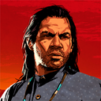

John Marston
Avant d'être recueilli par Dutch à l'âge de 12 ans, John survivait par ses propres moyens dans la rue. Lui et Arthur sont les deux protégés favoris de Dutch.

Charles Smith
Charles est un homme discret et réservé qui se montre extrêmement compétent dans tout ce qu'il entreprend et qui s'avère quasiment imbattable au combat.

Protagoniste
Liste des protagonistes.